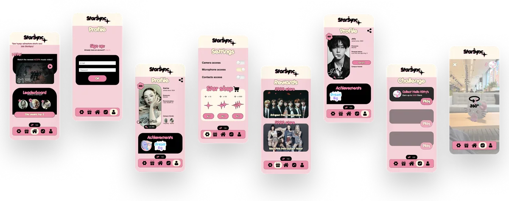
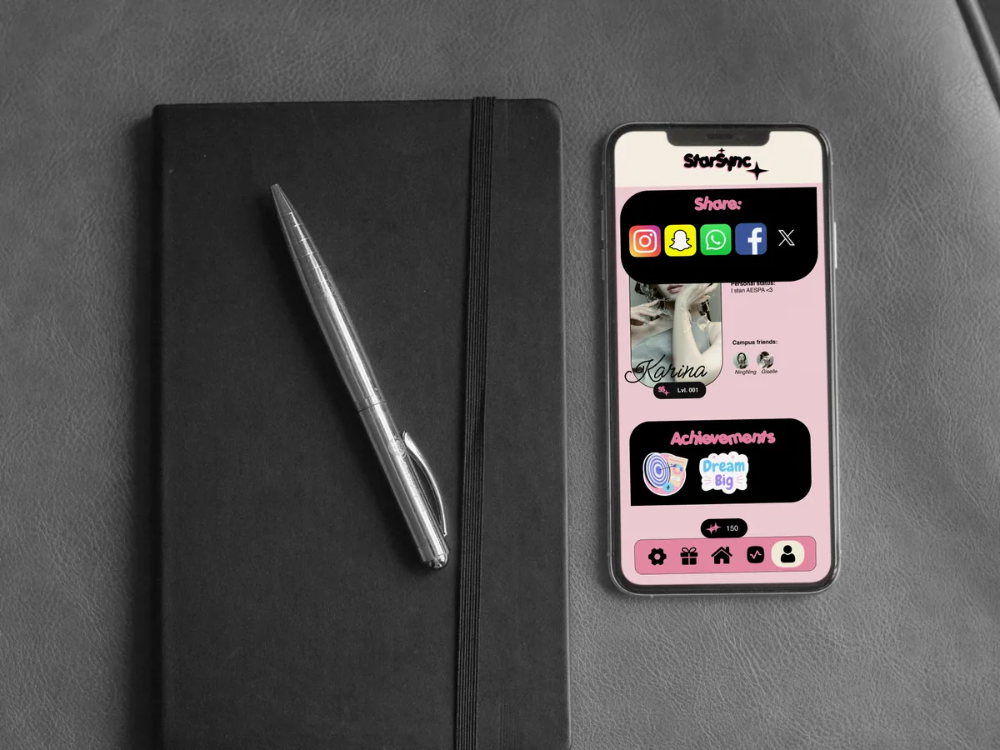

StarSync Community application
- No.
- 11
- Year
- 2024
- Discipline
- UI Design
- Role
- Visual interface design
- Tools
- Figma
- Format
- Mobile app concept

A community app concept that co-creates a community among Communication and Multimedia Design students, celebrating individuality within the collective.
Further reading
- CLICK to view the product biography NL · PDF

